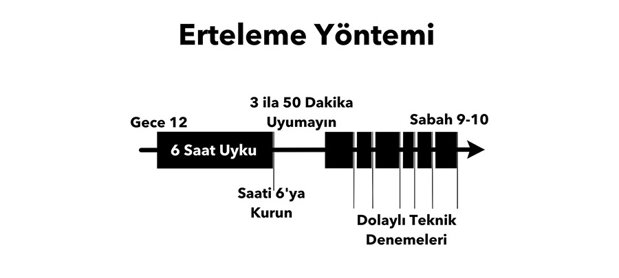

Lucid Rüya veya Lüsit Rüya, kişinin gördüğü rüya esnasında rüyada olduğunu farketmesi ve rüya gördüğünün bilincinde olmasıdır.Böylelikle rüya sırasında, rüyayı gören kişi gördüğü rüyanın kontrolünü ele alır veya rüyayı sonlandırabilir.
Lucid rüya bazı kişiler tarafından yaşamı boyunca sıklıkla görülürken, bazı kişiler yaşamı boyunca en fazla birkaç kez görmüşlerdir, hatta hiç lucid rüya görmeyen kişilerde vardır.
Lucid rüya esnasında rüyanın kontrolü tamamen kişinin kontrolünde olduğu için, yapılabileceklerin sınırı, hayal gücünün bile üzerine çıkabilir, uçulabilir, mantık dışı şeyler görülebilir veya bu ters tepebilir ve bilinçaltındaki en kötü şeylerle karşılaşılabilir
Lucid rüyanın uykunun derinliklerinde gerçekleşmesi zordur. Genel olarak "rem uykusu" denilen arada gerçekleşir. Yani uyanmakla uyanmamak arasındaki çizgide rüyayı kontrol etmek oldukça kolaydır. Bunun isteyerek yapabilmek mümkündür fakat birkaç ince detayı vardır.
Nasıl Yapılır ?
6 Saat Uyuyun ve Alarm ile Uyanın
İşiniz olmadığı ya da erken uyanmak zorunda olmadığınızı düşünürsek bir günden önceki gece normal saatinizde yatağınıza gidin ve alarmı en az 6 saat uyuyabileceğiniz şekilde kurun.
Alarm çaldığında kalkıp bir bardak su içmeli, tuvalete gitmeli ve bu yönergeleri tekrar okumalısınız.
Tekrar Uyurken Bir Amacınız Olsun
3 ilâ 50 dakika arası uyanık kaldıktan sonra tekrar yatağa dönün ve dikkatinizi uykunuzu takip eden doğal uyanmalarda bedeninizi terk etmek ve eylem planınızı gerçekleştirmek için dolaylı teknik döngülerini nasıl uygulayacağınız üzerinde yoğunlaştırmalısınız.
Bunu takip eden tüm uyanmalar doğal olarak gerçekleşmelidir. Eğer odanın içi çok aydınlıksa özel bir uyku gözlüğü takabilirsiniz.
Eğer gürültülüyse kulak tıkacı kullanın.
Uyanır Uyanmaz Ayrılın
Her bir uyanışınızda hareket etmemeye ya da gözlerinizi açmamaya çalışın.
Bunun yerine hemen bedeninizden ayrılmaya çalışın.
Dolaylı tekniklerdeki başarının %50’si bu ilk adım ile gelir.
O kadar kolay bir adım ki insanlar işe yarayacağından emin olamıyorlar.
Lucid Rüya Güvenli mi?

Evet güvenlidir, sadece rüya görmektesiniz.
Duygular ve düşünceler beyindeki sinyallerden ibarettir.
Lucid Rüya’da elinizi yakar ve belki acı hissedebilirsiniz ancak uyandığınızda elinizde bir hasar görmeyeceksiniz.
İlgi çekici kısmı budur. Rüyada ölünce gerçekte de ölürmüyüm? Hayır, bu mümkün değil.
Her Şey Sizin Elinizde
Bedeninizden ayrılmak için basitçe kalkmaya, havalanmaya ya da yataktan yükselmeye çalışın.
Bunu bedeninizle yapmaya çalışın ancak fiziksel kaslarınızı oynatmayın.
Bunun tamamen normal bir fiziksel hareket gibi hissettirdiğinden emin olun.
O an geldiğinde bunu nasıl yapacağınız hakkında çok fazla düşünmeyin.
Uyanıştan sonraki ilk anlarda bir şekilde, her nasıl yapabiliyorsanız, inatla vücudunuzdan ayrılmaya çalışın.
Yüksek ihtimalle bunu nasıl yapacağınızı içgüdüsel olarak anlayacaksınız.
En önemli şey çok fazla düşünmemek ve uyanışın ilk anlarını kaçırmamak.